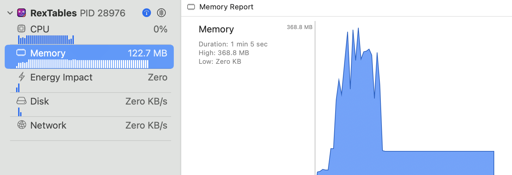
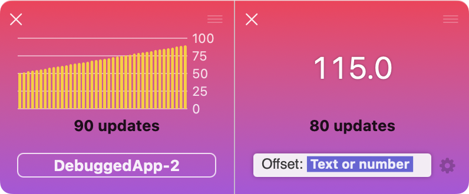

dataTile for Simulator - public beta on TestFlight now!

As I wrote recently, in 2022 I worked on a lot of side projects and even made a shippable and usable versions of few of them.
Many of the ideas I worked on converged in the latest app that I believe is a product a large number of developers could use to improve their daily lives.
Yesterday, I opened up dataTile for Simulator for public testing on TestFlight. If you want to give it a try or learn more, the website is:
https://underplot.com/dataTile

But if you do have few minutes free: I’d like to share more about my motivation for developing this app below.
Some initial thoughts on devtools
Computers, still, do exactly what we tell them to. But in complex codebases sometimes it’s difficult to be sure what that is. Also, some things are just difficult to have clear in your head while coding, a great example is “How much RAM is this code currently using?”
What I’m inching towards is that, simply, we need at least some tools to aid us while writing code. If we circle back to the great example from above, Xcode offers a spot-on, effortless way to keep an eye on your memory usage. No, it’s not the Allocations instrument, because you need to recompile your codebase before instrumenting your app.
It’s the debugger view in Xcode in the left-hand sidebar while running your project:
Open a large file in your app, then close it. Was all the memory freed or was there a leak? You can just have a look at Xcode because the tool is already running — there’s no need to recompile and reproduce in Instruments.
This view might not be as feature-rich or 100% correct, but … you’re 1000x more likely to use it than the Allocations instrument in your day-to-day routine. And as a result, create better code instead of instrumenting it after the fact.
I often times wished that this view would be more flexible and even, gasp, open to developers to show their own data.
So, dataTile for Simulator is…
dataTile for Simulator is a second screen app for Xcode.
It’s so small and unobtrusive that you can have it always running, while it automatically adjusts its UI to what you’re doing in Xcode.
It picks up any valuable logs out of the system and debugger output and shows them in a clean, beautiful UI:
Core principles behind dataTile
After condensing, cleaning up, and converging many of my thoughts on tooling, I put together a list of core principles I wanted to implement in dataTile. These are, in no particular order, listed below:
- Simplicity: you log a number or a string & a tile shows it, no questions asked. You can view that data as a chart or potentially apply functions and filters, but in its essense a tile would just show one value in big font on screen.
- Always on: you leave dataTile for Simulator run in the background or integrate it as pre-run phase in your project. Either way, you don’t have to recompile your project to use it, you don’t have to reproduce a situation. Any logged data is already available for a quick glance.
- No changes: if you’re using Apple’s logging, you don’t need to import 3rd party libs, you don’t need to change your code. You don’t need to configure dataTile either — it reads the Simulator logs in real time and recognizes logged values on its own.
- Fun: Tooling doesn’t need to be visually grim. The UI is, by default, bright, spotting large text and unobtrusive animations.
Finally, not much of a principle but a curiousity note: dataTile is absolutely and completely SwiftUI-made. Hense, the requirement to run on macOS Ventura which added support for windows and added built-in charts.
It’s an open beta
I’d like to run an open beta until the end of this year. If you’re building iOS apps or otherwise and use Xcode and the Simulator daily, dataTile might be of value in your day-to-day.
I am sure, there are still some pre 1.0 rough edges I could polish and I’m counting on your feedback to do so before launch!
You can sign up for the open beta here: https://underplot.com/dataTile
Finally, I have one ask:
If you know bloggers, podcasters, or one of the folks writing at cultofmac, 9to5mac, macworld… who’d be interested to cover developer tools, second screen app for Xcode, or indie mac apps — put in me in touch with them, please.
Thank you!
My DMs are open at https://twitter.com/icanzilb and https://mastodon.social/@icanzilb